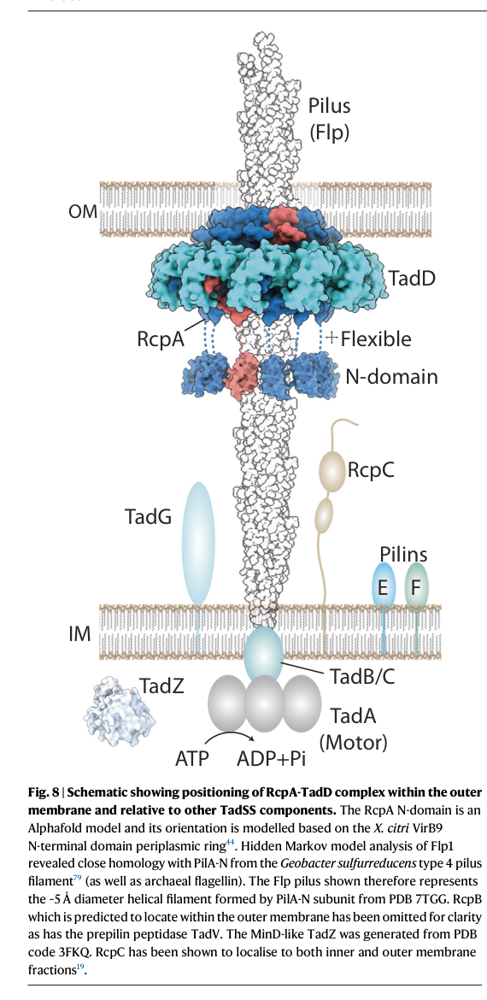

Q1IFG0 (PSEEN0657, pseen_duf) is an uncharacterized membrane protein in Pseudomonas entomophila with predicted Tad_N/Tad/Tad_C domains and a DUF2134_membrane domain. By domain architecture and Tad-secretion-system context, it is most parsimoniously a Tad/Flp (type IVc) pilus biogenesis component (inner-membrane platform/assembly role rather than a catalytic enzyme); no primary publication directly characterizing PSEEN0657 was identified in deep research.
The research report should be a detailed narrative explaining the function, biological processes, and localization of the gene product. Citations should be given for all claims.
You should prioritize authoritative reviews and primary scientific literature when conducting research. You can supplement
this with annotations you find in gene/protein databases, but these can be outdated or inaccurate.
We are specifically interested in the primary function of the gene - for enzymes, what reaction is catalyzed, and what is the substrate specificity? For transporters, what is the substrate? For structural proteins or adapters, what is the broader structural role? For signaling molecules, what is the role in the pathway.
We are interested in where in or outside the cell the gene product carries out its function.
We are also interested in the signaling or biochemical pathways in which the gene functions. We are less interested in broad pleiotropic effects, except where these elucidate the precise role.
Include evidence where possible. We are interested in both experimental evidence as well as inference from structure, evolution, or bioinformatic analysis. Precise studies should be prioritized over high-throughput, where available.
The target gene product is UniProt Q1IFG0, OrderedLocusNames PSEEN0657, from Pseudomonas entomophila (strain L48), annotated in UniProt as an uncharacterized protein with domain assignments DUF2134_membrane (IPR018705) and Tad_N / Tad / Tad_C (PF13400/PF09977; IPR028087) (user-provided UniProt context). Tool-based literature retrieval did not identify publications explicitly mentioning Q1IFG0, PSEEN0657, or the symbol pseen_duf, so gene-specific experimental characterization for this exact locus could not be cited directly from the retrieved corpus. Consequently, the most defensible functional annotation is domain- and system-based, by mapping the domain architecture to the Tad/Flp (type IVc) pilus (“Tad secretion system”, TadSS) machinery and citing mechanistic studies of Tad components in other bacteria, including Pseudomonas spp. (tassinari2023assemblymechanismof pages 1-2, evans2025thestructureof pages 1-3).
Type IV filaments (T4F) are a broad superfamily of prokaryotic filamentous nanomachines assembled from pilin(-like) subunits using a conserved membrane-associated assembly apparatus (pelicic2023mechanismofassembly pages 2-3). Tad/Flp pili (also called Tad pili or Flp pili) are a distinct T4F subtype (also designated type IVc in some classifications) implicated broadly in biofilm formation, host colonization, and pathogenesis (pelicic2023mechanismofassembly pages 2-3, little2024typeivpili pages 2-4).
Mechanistically, Tad/Flp pilus biogenesis follows the common T4F logic: (i) synthesis and inner-membrane (IM) storage of pilin subunits, (ii) leader peptide cleavage by a prepilin peptidase, (iii) ATPase-driven extraction/polymerization at the cytoplasmic membrane platform, and (iv) in Gram-negatives, passage through the periplasm and extrusion via an outer-membrane (OM) secretin pore (pelicic2023mechanismofassembly pages 8-9, little2024typeivpili pages 4-6).
Across Gram-negative bacteria, TadSS is often encoded by a single operon of ~12–14 genes (tassinari2023assemblymechanismof pages 1-2, tekedar2024tadpilicontribute pages 14-15). A concrete, experimentally used example (from Aeromonas hydrophila) lists a 13-gene tad operon: flp, tadV, rcpC, rcpA, rcpB, tadZ, tadA, tadB, tadC, tadD, tadE, tadF, tadG (tekedar2024tadpilicontribute pages 11-12).
The presence of Tad_N/Tad/Tad_C domains is strongly associated with proteins in Tad/Flp pilus biogenesis modules, particularly IM-associated “platform”/assembly proteins (system-level inference supported by established TadSS component roles, below). While the retrieved literature does not directly annotate Q1IFG0, it establishes that IM platform proteins TadB and TadC are central coupling components that connect the cytoplasmic motor ATPase (TadA) to pilin extraction and polymerization (evans2025thestructureof pages 1-3, tassinari2023assemblymechanismof pages 1-2).
Given that UniProt describes Q1IFG0 as a membrane-domain protein (DUF2134_membrane) with Tad-related domains, the most parsimonious functional hypothesis is that Q1IFG0 participates as a TadSS inner-membrane component (platform/assembly factor) rather than a secreted enzyme or transport substrate-binding protein.
Primary function (best-supported, system-level): structural/assembly role in Tad/Flp pilus biogenesis, likely at the inner membrane as part of the TadSS IM subcomplex that transduces ATPase activity into pilus polymerization (tassinari2023assemblymechanismof pages 1-2, little2024typeivpili pages 4-6).
Catalytic activity / substrate specificity: none expected; TadB/TadC-like proteins are not known to catalyze small-molecule reactions in the TadSS model but rather contribute to macromolecular machine assembly (tassinari2023assemblymechanismof pages 1-2).
The TadSS is a trans-envelope machine with distinct localizations for key components:
- TadA: cytoplasmic ATPase motor (tassinari2023assemblymechanismof pages 1-2).
- TadB/TadC: inner membrane platform (evans2025thestructureof pages 1-3, tassinari2023assemblymechanismof pages 1-2).
- RcpA: outer-membrane secretin pore (tassinari2023assemblymechanismof pages 1-2).
- TadD: outer-membrane lipoprotein pilotin required for secretin assembly (tassinari2023assemblymechanismof pages 1-2).
- RcpC: IM-anchored, periplasmic “alignment complex” forming a conduit to the OM secretin (evans2025thestructureof pages 3-5, evans2025thestructureof pages 5-7).
The schematic model of TadSS localization and architecture in P. aeruginosa explicitly depicts these positions across IM, periplasm, and OM (tassinari2023assemblymechanismof media 4279f43e, tassinari2023assemblymechanismof media 418d0ccf). By analogy, Q1IFG0 is most consistent with an inner-membrane localization, with one or more transmembrane helices and periplasmic/cytoplasmic-facing domains, fitting an IM assembly component rather than the OM secretin/pilotin class.
TadSS assembles Flp pili that drive adherence, biofilm formation, and broader colonization phenotypes (tassinari2023assemblymechanismof pages 1-2). Tad pili can mediate nonspecific adherence to surfaces and other cells, supporting aggregation and biofilm-associated lifestyles (evans2025thestructureof pages 10-13).
A 2023 Nature Communications study resolved the assembly mechanism of the TadSS secretin RcpA with its pilotin TadD in Pseudomonas aeruginosa. It demonstrated that the C-terminal four residues of RcpA bind TadD, and that this interaction is essential for secretin formation (publication date: Sep 2023; URL: https://doi.org/10.1038/s41467-023-41200-1) (tassinari2023assemblymechanismof pages 1-2). Fluorescence microscopy also quantified localization behavior, reporting averages of 0.82 (RcpA) and 1.12 (TadD) punctate foci per cell, and ~41% of fluorescent cells showing one or two co-localized foci (tassinari2023assemblymechanismof pages 1-2). These findings refine how TadSS builds a functional OM exit channel.
A 2023 review synthesized mechanistic principles across T4F assembly, including prepilin peptidase biochemistry and ATPase-driven pilus polymerization, and highlighted how AI structure prediction is reshaping assembly models (publication date: Mar 2023; URL: https://doi.org/10.1099/mic.0.001311) (pelicic2023mechanismofassembly pages 2-3, pelicic2023mechanismofassembly pages 8-9). For functional annotation of an uncharacterized Tad-associated membrane protein, this review is relevant because it frames the expected role of platform proteins and their coupling to ATPase motors.
A 2024 primary study in Frontiers in Cellular and Infection Microbiology analyzed 170 A. hydrophila genomes and experimentally deleted the entire tad operon in a virulent strain. The tad operon was reported as 10,852 bp encoding 13 genes (flp, tadV, rcpC, rcpA, rcpB, tadZ, tadA, tadB, tadC, tadD, tadE, tadF, tadG), with elevated GC content 64.82% vs 60.82% genome average (publication date: Jul 2024; URL: https://doi.org/10.3389/fcimb.2024.1425624) (tekedar2024tadpilicontribute pages 11-12). Functionally, operon deletion reduced fish mortality in an immersion challenge from 74.36% (WT) to 14.65% (Δtad) at 72 h (tekedar2024tadpilicontribute pages 11-12). While not from P. entomophila, this provides recent quantitative evidence that TadSS is a major virulence/biofilm determinant and thus a plausible functional context for Q1IFG0 if it is a TadSS component.
A 2024 EcoSal Plus review characterizes the tad/flp cluster as a widely distributed colonization island and notes defining pilin features such as small (~8 kDa) pilins and conserved motifs (publication date: Dec 2024; URL: https://doi.org/10.1128/ecosalplus.esp-0003-2023) (little2024typeivpili pages 2-4). This strengthens the interpretation that “Tad” domain signatures generally map to colonization/attachment machinery.
Because TadSS promotes adherence, aggregation and biofilm formation, it is frequently discussed as an anti-virulence target class. Mechanistic elucidation of the OM secretin (RcpA) and pilotin (TadD) interface—e.g., the requirement for the RcpA C-terminus–TadD interaction for secretin formation—suggests a plausible structural “hotspot” for inhibitors that block TadSS assembly (tassinari2023assemblymechanismof pages 1-2). Similarly, the discovery of an essential, defined RcpC–RcpA alignment conduit across the periplasm indicates additional potential weak points in TadSS biogenesis (evans2025thestructureof pages 3-5, evans2025thestructureof pages 5-7). These are translational implications grounded in mechanism, though the retrieved corpus did not include clinical/fielded implementations.
The 2024 A. hydrophila work provides in vivo evidence that removing the tad operon strongly attenuates virulence in fish (tekedar2024tadpilicontribute pages 11-12). This supports real-world relevance in aquaculture disease control strategies that aim to reduce colonization/virulence determinants (e.g., pilus-system components) rather than targeting essential metabolism.
Q1IFG0/PSEEN0657 (pseen_duf) is best annotated as a Tad/Flp (type IVc) pilus biogenesis protein, likely an inner-membrane structural/platform component participating in the Tad secretion system that assembles Flp pili and thereby supports adherence/aggregation and biofilm-associated colonization.
TadSS-dependent pilus assembly (type IV filament biogenesis), contributing to surface attachment and biofilm formation, which are frequently coupled to virulence/host colonization phenotypes in diverse Gram-negative bacteria (tassinari2023assemblymechanismof pages 1-2, tekedar2024tadpilicontribute pages 11-12).
Most consistent with inner membrane (cell envelope) localization as part of the TadSS IM subcomplex (by domain content and TadSS architecture), acting together with the cytoplasmic ATPase motor (TadA) and the OM secretin module (RcpA/TadD) across the envelope (tassinari2023assemblymechanismof pages 1-2, tassinari2023assemblymechanismof media 4279f43e).
This annotation is high-confidence at the system level (Tad/Flp pilus biogenesis association) but low-confidence for the exact component identity (e.g., TadC vs another Tad-associated IM protein) because no retrieved publications directly analyze Q1IFG0/PSEEN0657 from P. entomophila L48.
The following table compiles canonical TadSS components, localization, and roles supported by 2023–2024 primary studies and reviews.
| Component (gene/protein) | Subcellular localization | Functional role | Key supporting citation IDs |
|---|---|---|---|
| Flp pilin (Flp/Flp1) | Cell envelope pool before assembly; extracellular pilus filament after assembly | Major structural pilin of the Tad/Flp (type IVc) pilus; polymerized into the surface filament that mediates adherence/aggregation | (evans2025thestructureof pages 1-3, tassinari2023assemblymechanismof pages 1-2) |
| TadV | Cytoplasmic face of the inner/cytoplasmic membrane | Prepilin peptidase that matures Flp1 and minor pilins/pseudopilins TadE/TadF before assembly | (evans2025thestructureof pages 1-3, tassinari2023assemblymechanismof pages 1-2, tassinari2023assemblymechanismof pages 11-11, pelicic2023mechanismofassembly pages 8-9) |
| TadA | Cytoplasm, associated with inner-membrane assembly machinery | Traffic ATPase that energizes pilus polymerization/assembly; in Tad systems functions as the main motor driving filament biogenesis | (evans2025thestructureof pages 1-3, tassinari2023assemblymechanismof pages 1-2, pelicic2023mechanismofassembly pages 8-9) |
| TadB | Inner membrane | Assembly platform component coupling the ATPase-driven motor to pilin extraction/polymerization | (evans2025thestructureof pages 1-3, tassinari2023assemblymechanismof pages 1-2, tassinari2023assemblymechanismof media 4279f43e) |
| TadC | Inner membrane | Assembly platform component working with TadB to transmit energy from TadA to the growing pilus | (evans2025thestructureof pages 1-3, tassinari2023assemblymechanismof pages 1-2, tassinari2023assemblymechanismof media 4279f43e) |
| TadZ | Cytoplasmic/peripheral inner-membrane, often polar | ParA/MinD-family assembly/localization factor implicated in polar targeting and spatial organization of Tad biogenesis | (evans2025thestructureof pages 1-3, tassinari2023assemblymechanismof pages 1-2, tassinari2023assemblymechanismof pages 11-11) |
| RcpA | Outer membrane with periplasmic N-domain | Secretin pore through which the Tad pilus crosses the outer membrane; forms OM channel essential for secretion of the filament | (evans2025thestructureof pages 1-3, tassinari2023assemblymechanismof pages 1-2, evans2025thestructureof pages 5-7) |
| TadD | Outer-membrane lipoprotein | Pilotin required for RcpA localization, multimerization, and secretin assembly in the outer membrane | (evans2025thestructureof pages 1-3, tassinari2023assemblymechanismof pages 1-2) |
| RcpC | Inner membrane-anchored, largely periplasmic | Alignment-complex protein; forms a dodecameric periplasmic conduit linking inner-membrane Tad machinery to the RcpA secretin and is required for efficient Tad-mediated aggregation/biofilm phenotypes | (evans2025thestructureof pages 10-13, evans2025thestructureof pages 1-3, evans2025thestructureof pages 3-5, evans2025thestructureof pages 7-7, evans2025thestructureof pages 5-7, tassinari2023assemblymechanismof media 4279f43e) |
| RcpB | Likely envelope-associated accessory component; precise localization/function unresolved from the provided evidence | Canonical tad operon member listed in comparative genomics/operon maps, but specific mechanistic assignment is not defined in the retrieved evidence | (tekedar2024tadpilicontribute pages 11-12) |
| TadE | Inner-membrane pilin pool before assembly; likely minor pilus-associated component | Minor pilin/pseudopilin-like component processed by TadV; likely contributes to pilus initiation/assembly | (tassinari2023assemblymechanismof pages 1-2, tassinari2023assemblymechanismof pages 11-11, rizzo2024molecularcrosstalkamong pages 6-6) |
| TadF | Inner-membrane pilin pool before assembly; likely minor pilus-associated component | Minor pilin/pseudopilin-like component processed by TadV; likely contributes to pilus initiation/assembly | (tassinari2023assemblymechanismof pages 1-2, tassinari2023assemblymechanismof pages 11-11, tekedar2024tadpilicontribute pages 11-12) |
| TadG | Likely inner-membrane/envelope-associated accessory component; precise localization unresolved from the provided evidence | Canonical tad operon component present in operon lists/schematic models, but exact biochemical role is not resolved in the retrieved evidence | (tassinari2023assemblymechanismof media 4279f43e, tekedar2024tadpilicontribute pages 11-12) |
| Tekedar 2024 quantitative note: complete tad operon composition in A. hydrophila ML09-119 | Operon/genome-level observation | 13-gene operon listed as flp, tadV, rcpC, rcpA, rcpB, tadZ, tadA, tadB, tadC, tadD, tadE, tadF, tadG | (tekedar2024tadpilicontribute pages 11-12) |
| Tekedar 2024 quantitative note: operon size | Operon/genome-level observation | Tad operon length reported as 10,852 bp | (tekedar2024tadpilicontribute pages 11-12) |
| Tekedar 2024 quantitative note: GC content | Operon/genome-level observation | Tad operon GC content 64.82% versus genome average 60.82% | (tekedar2024tadpilicontribute pages 11-12, tekedar2024tadpilicontribute pages 14-15) |
| Tekedar 2024 quantitative note: virulence effect of tad deletion | Whole-organism phenotype | Immersion-challenge mortality in catfish fingerlings decreased from 74.36% (WT) to 14.65% (Δtad) at 72 h | (tekedar2024tadpilicontribute pages 11-12) |
Table: This table summarizes canonical Tad/Flp (type IVc) pilus components, their likely subcellular localization, and inferred or demonstrated functions from the retrieved evidence. It also captures key quantitative operon and phenotype data from Tekedar et al. 2024 that are useful for functional annotation.
A schematic model of TadSS showing component localization across inner membrane, periplasm, and outer membrane (including RcpA secretin, TadD pilotin, and alignment component placement) is available in the retrieved figure crops (tassinari2023assemblymechanismof media 4279f43e, tassinari2023assemblymechanismof media 418d0ccf).
References
(tassinari2023assemblymechanismof pages 1-2): Matteo Tassinari, Marta Rudzite, Alain Filloux, and Harry H. Low. Assembly mechanism of a tad secretion system secretin-pilotin complex. Nature Communications, Sep 2023. URL: https://doi.org/10.1038/s41467-023-41200-1, doi:10.1038/s41467-023-41200-1. This article has 24 citations and is from a highest quality peer-reviewed journal.
(evans2025thestructureof pages 1-3): Sasha L. Evans, Iryna Peretiazhko, Sahil Y. Karnani, Lindsey S. Marmont, James H. R. Wheeler, Boo Shan Tseng, William M. Durham, John C. Whitney, and Julien R. C. Bergeron. The structure of the tad pilus alignment complex reveals a periplasmic conduit for pilus extension. Nature Communications, Oct 2025. URL: https://doi.org/10.1101/2024.10.29.620805, doi:10.1101/2024.10.29.620805. This article has 7 citations and is from a highest quality peer-reviewed journal.
(pelicic2023mechanismofassembly pages 2-3): Vladimir Pelicic. Mechanism of assembly of type 4 filaments: everything you always wanted to know (but were afraid to ask). Microbiology, Mar 2023. URL: https://doi.org/10.1099/mic.0.001311, doi:10.1099/mic.0.001311. This article has 48 citations and is from a peer-reviewed journal.
(little2024typeivpili pages 2-4): Janay I. Little, Pradip K. Singh, Jinlei Zhao, Shakeera Dunn, Hanover Matz, and Michael S. Donnenberg. Type iv pili of enterobacteriaceae species. EcoSal Plus, Dec 2024. URL: https://doi.org/10.1128/ecosalplus.esp-0003-2023, doi:10.1128/ecosalplus.esp-0003-2023. This article has 11 citations.
(pelicic2023mechanismofassembly pages 8-9): Vladimir Pelicic. Mechanism of assembly of type 4 filaments: everything you always wanted to know (but were afraid to ask). Microbiology, Mar 2023. URL: https://doi.org/10.1099/mic.0.001311, doi:10.1099/mic.0.001311. This article has 48 citations and is from a peer-reviewed journal.
(little2024typeivpili pages 4-6): Janay I. Little, Pradip K. Singh, Jinlei Zhao, Shakeera Dunn, Hanover Matz, and Michael S. Donnenberg. Type iv pili of enterobacteriaceae species. EcoSal Plus, Dec 2024. URL: https://doi.org/10.1128/ecosalplus.esp-0003-2023, doi:10.1128/ecosalplus.esp-0003-2023. This article has 11 citations.
(tekedar2024tadpilicontribute pages 14-15): Hasan C. Tekedar, Fenny Patel, Jochen Blom, Matt J. Griffin, Geoffrey C. Waldbieser, Salih Kumru, Hossam Abdelhamed, Vandana Dharan, Larry A. Hanson, and Mark L. Lawrence. Tad pili contribute to the virulence and biofilm formation of virulent aeromonas hydrophila. Frontiers in Cellular and Infection Microbiology, Jul 2024. URL: https://doi.org/10.3389/fcimb.2024.1425624, doi:10.3389/fcimb.2024.1425624. This article has 12 citations.
(tekedar2024tadpilicontribute pages 11-12): Hasan C. Tekedar, Fenny Patel, Jochen Blom, Matt J. Griffin, Geoffrey C. Waldbieser, Salih Kumru, Hossam Abdelhamed, Vandana Dharan, Larry A. Hanson, and Mark L. Lawrence. Tad pili contribute to the virulence and biofilm formation of virulent aeromonas hydrophila. Frontiers in Cellular and Infection Microbiology, Jul 2024. URL: https://doi.org/10.3389/fcimb.2024.1425624, doi:10.3389/fcimb.2024.1425624. This article has 12 citations.
(evans2025thestructureof pages 3-5): Sasha L. Evans, Iryna Peretiazhko, Sahil Y. Karnani, Lindsey S. Marmont, James H. R. Wheeler, Boo Shan Tseng, William M. Durham, John C. Whitney, and Julien R. C. Bergeron. The structure of the tad pilus alignment complex reveals a periplasmic conduit for pilus extension. Nature Communications, Oct 2025. URL: https://doi.org/10.1101/2024.10.29.620805, doi:10.1101/2024.10.29.620805. This article has 7 citations and is from a highest quality peer-reviewed journal.
(evans2025thestructureof pages 5-7): Sasha L. Evans, Iryna Peretiazhko, Sahil Y. Karnani, Lindsey S. Marmont, James H. R. Wheeler, Boo Shan Tseng, William M. Durham, John C. Whitney, and Julien R. C. Bergeron. The structure of the tad pilus alignment complex reveals a periplasmic conduit for pilus extension. Nature Communications, Oct 2025. URL: https://doi.org/10.1101/2024.10.29.620805, doi:10.1101/2024.10.29.620805. This article has 7 citations and is from a highest quality peer-reviewed journal.
(tassinari2023assemblymechanismof media 4279f43e): Matteo Tassinari, Marta Rudzite, Alain Filloux, and Harry H. Low. Assembly mechanism of a tad secretion system secretin-pilotin complex. Nature Communications, Sep 2023. URL: https://doi.org/10.1038/s41467-023-41200-1, doi:10.1038/s41467-023-41200-1. This article has 24 citations and is from a highest quality peer-reviewed journal.
(tassinari2023assemblymechanismof media 418d0ccf): Matteo Tassinari, Marta Rudzite, Alain Filloux, and Harry H. Low. Assembly mechanism of a tad secretion system secretin-pilotin complex. Nature Communications, Sep 2023. URL: https://doi.org/10.1038/s41467-023-41200-1, doi:10.1038/s41467-023-41200-1. This article has 24 citations and is from a highest quality peer-reviewed journal.
(evans2025thestructureof pages 10-13): Sasha L. Evans, Iryna Peretiazhko, Sahil Y. Karnani, Lindsey S. Marmont, James H. R. Wheeler, Boo Shan Tseng, William M. Durham, John C. Whitney, and Julien R. C. Bergeron. The structure of the tad pilus alignment complex reveals a periplasmic conduit for pilus extension. Nature Communications, Oct 2025. URL: https://doi.org/10.1101/2024.10.29.620805, doi:10.1101/2024.10.29.620805. This article has 7 citations and is from a highest quality peer-reviewed journal.
(tassinari2023assemblymechanismof pages 11-11): Matteo Tassinari, Marta Rudzite, Alain Filloux, and Harry H. Low. Assembly mechanism of a tad secretion system secretin-pilotin complex. Nature Communications, Sep 2023. URL: https://doi.org/10.1038/s41467-023-41200-1, doi:10.1038/s41467-023-41200-1. This article has 24 citations and is from a highest quality peer-reviewed journal.
(evans2025thestructureof pages 7-7): Sasha L. Evans, Iryna Peretiazhko, Sahil Y. Karnani, Lindsey S. Marmont, James H. R. Wheeler, Boo Shan Tseng, William M. Durham, John C. Whitney, and Julien R. C. Bergeron. The structure of the tad pilus alignment complex reveals a periplasmic conduit for pilus extension. Nature Communications, Oct 2025. URL: https://doi.org/10.1101/2024.10.29.620805, doi:10.1101/2024.10.29.620805. This article has 7 citations and is from a highest quality peer-reviewed journal.
(rizzo2024molecularcrosstalkamong pages 6-6): Sonia Mirjam Rizzo, Giulia Alessandri, Chiara Tarracchini, Massimiliano G. Bianchi, Alice Viappiani, Leonardo Mancabelli, Gabriele Andrea Lugli, Christian Milani, Ovidio Bussolati, Douwe van Sinderen, Marco Ventura, and Francesca Turroni. Molecular cross-talk among human intestinal bifidobacteria as explored by a human gut model. Frontiers in Microbiology, Sep 2024. URL: https://doi.org/10.3389/fmicb.2024.1435960, doi:10.3389/fmicb.2024.1435960. This article has 7 citations and is from a peer-reviewed journal.

id: Q1IFG0
gene_symbol: pseen_duf
aliases:
- PSEEN0657
taxon:
id: NCBITaxon:384676
label: Pseudomonas entomophila (strain L48)
description: Q1IFG0 (PSEEN0657, pseen_duf) is an uncharacterized membrane protein
in Pseudomonas entomophila with predicted Tad_N/Tad/Tad_C domains and a DUF2134_membrane
domain. By domain architecture and Tad-secretion-system context, it is most
parsimoniously a Tad/Flp (type IVc) pilus biogenesis component (inner-membrane
platform/assembly role rather than a catalytic enzyme); no primary publication
directly characterizing PSEEN0657 was identified in deep research.
existing_annotations: []
references:
- id: doi:10.1038/s41467-023-41200-1
title: Assembly mechanism of the bacterial type IVc Tad pilus secretin RcpA
and its pilotin TadD (Tassinari et al., Nat Commun, 2023).
findings:
- statement: The Tad secretion system (TadSS) outer-membrane secretin RcpA
assembles via interaction of its C-terminal four residues with the pilotin
TadD; this interface is essential for secretin pore formation in
Pseudomonas aeruginosa.
- id: doi:10.1099/mic.0.001311
title: Mechanism of assembly of type IV filaments (Pelicic, Microbiology, 2023).
findings:
- statement: Type IV filaments (T4F), including Tad/Flp pili, are assembled
by a conserved logic - prepilin peptidase processing, ATPase-driven
polymerization at an inner-membrane platform, and (in Gram-negatives)
extrusion through an outer-membrane secretin; Tad pilus components are
colonization/biofilm/virulence factors.
- id: doi:10.3389/fcimb.2024.1425624
title: Tad pili contribute to virulence and biofilm formation in Aeromonas
hydrophila (Tekedar et al., 2024).
findings:
- statement: Comparative genomics of 170 A. hydrophila genomes plus in vivo
deletion shows the 13-gene tad operon (flp, tadV, rcpC, rcpA, rcpB, tadZ,
tadA, tadB, tadC, tadD, tadE, tadF, tadG; 10,852 bp, GC 64.8 percent)
is a major virulence determinant - operon deletion reduced fish mortality
from 74.4 percent to 14.7 percent in immersion challenge.
- id: file:PSEEN/pseen_duf/pseen_duf-deep-research-falcon.md
title: Deep research report on pseen_duf/Q1IFG0 (Falcon/Edison Scientific Literature)
findings:
- statement: No primary publication directly characterizes PSEEN0657 (Q1IFG0);
deep research supports a domain- and system-based annotation as a Tad/Flp
pilus biogenesis component, most likely an inner-membrane platform/assembly
protein (analogous to TadB/TadC) rather than a catalytic enzyme.
- statement: TadSS assembles Flp pili that drive adherence, aggregation and
biofilm formation; recent structural work (Tassinari 2023, Evans 2025)
and comparative genomics (Tekedar 2024) reinforce the virulence/colonization
relevance of this annotation - any GO terms assigned to Q1IFG0 should
therefore prefer pilus-assembly / membrane-component branches rather
than catalytic/enzymatic activity terms.
status: DRAFT
{kind=link}